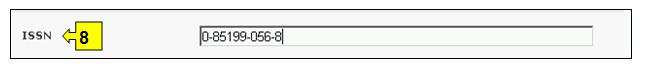

عنوان الموقع على الشبكة: http://bch.cbd.int/database/bibliographic-references/
تقضي المادة 20 من البروتوكول إنشاء غرفة تبادل معلومات السلامة الأحيائية، من أجل تيسير تبادل المعلومات والخبرات في مجال الكائنات الحيّة المحوَّرة بين الأطراف لمساعدتها على تنفيذ البروتوكول. وللمساعدة على الاضطلاع بهذا الدور، تتضمّن البوابة المركزية لغرفة تبادل معلومات السلامة الأحيائية معلومات مقدَّمة من الأطراف والحكومات والمنظمات، ذات الصلة بالسلامة الأحيائية وبتنفيذ البروتوكول.
وإضافة إلى مركز موارد معلومات السلامة الأحيائية الوارد تفاصيله في القسم 7.2 من الوحدة النموذجية للتدريب، تحتفظ غرفة تبادل معلومات السلامة الأحيائية بقاعدة بيانات للمنشورات العلمية المتصلة بالتحوّر الوراثي والسلامة الأحيائية وتنفيذ التكنولوجيا الأحيائية. ويدير قاعدة البيانات الببليوغرافية العلمية المركز الدولي للهندسة الوراثية والتكنولوجيا الأحيائية وهي متاحة لإطلاع جميع المستعمِلين.
ويمكن النفاذ إلى آلية البحث عن المنشورات من قاعدة البيانات الببليوغرافية العلمية باستخدام الوصلة الموجودة في قائمة الاختيارات المنسدلة الخاصة بإيجاد المعلومات على شريط التصفّح، أو من الوصلة الموجودة في القائمة اليسرى من صفحة إيجاد المعلومات، أو من الوصلة في النصّ الموجود على الصفحة ذاتها بشأن قاعدة البيانات الببليوغرافية العلمية.

صورة 94
تعرض صفحة البحث في قاعدة البيانات الببليوغرافية العلمية بشأن السلامة الأحيائية عشر اطر للبحث مؤمنة لتحسين البحث في قاعدة المعلومات. ولكل واحد منهم هنالك قائمة منسدلة تسمح باختيار المعايير المطلوبة. التركيب الاجمالي لقائمة الخيارات المنسدلة هي الفقرة الاولى على رأس قائمة الخانة. الزر الموجود على جهة اليمين من كل اطار يسمح للمستخدم بتفعيل عدة اختيارات. عندما يكون المستخدم في اسلوب الاختيارات المختلفة، من الممكن ان يضاف معايير مختلفة للاختيارات من خلال الضغط على المعيار المناسب والضغط على مفتاح (Ctrl).
وتذكّر أن البحث في جميع السجلات في قاعدة البيانات الببليوغرافية العلمية سيخرج نتائج كثيرة جداً وسيقتصر ما يظهر على 000 1 سجل.

صورة 95
الإطار 1 {العنوان} يؤمن خياراً للمستخدم ليطبع عنوان المنشور عندما يكون ذلك معروفاً. ويستطيع المستعمِل أيضاً أن يُدخِل كلمة أو كلمات من العنوان، باستخدام جملة ثابتة للبحث مع كلمة AND أو OR بين سلاسل الكلمات.

صورة 96
الإطار 2 {الكاتب /الكتاب} يسمح للمستعمِل بأن يبحث عن مؤلف محدّد بإدخال اسم العائلة في هذا الإطار الخاص بالبحث.

صورة 97
الإطار 3 {سنة النشر} يتضمّن خيارات تتعلق بتاريخ نشر المقالة. ويسمح للمستعمل بأن يبحث عن السنة المحددة للنشر جميع، (من خلال استعمال فقط اطار السنة) او مدة زمنية تحدد ما قبل أو ما بعد السنة المختارة.

صورة 98
الإطار 4 {الناشر} يسمح للمستعمل بأن يبحث في قاعدة البيانات عن المقالات وفق اسم الناشر.

صورة 99
الإطار 5 { المجالات المواضيعية } يتضمن المجالات المواضيعية للمنشورات المتوفرة و تسمح للمستخدم في تضييق اطار البحث لواحد أو أكثر من هؤلاء.

صورة 100
الإطار 6 { نوع السجل } يتضمّن أنواع السجلات المختزنة في قاعدة البيانات. وهذا يسمح للمستعمل بتضييق نطاق البحث إلى نوع محدّد من المنشورات.

صورة 101
الإطار 7 { اللغة } يسمح للمستعمل بأن يحد نطاق البحث ليقتصر على لغة واحدة أو أكثر من اللغات.

صورة 102
الإطار 8 { الرقم التسلسلي الدولي الموحّد } يسمح للمستعمِل بإدخال رقم او اكثر من الرقم التسلسلي الدولي الموحّد لتحديد مكان منشور محدد موضع الاهتمام. الرقم التسلسلي الدولي الموحّد هو رقم فريد من ثمانية اعداد تستعمل لتعريف مطبوعة او منشورة الكترونية. يعتمد نظام الرقم التسلسلي الدولي الموحّد كنظام دولي ISO 3297 في العام 1975.

صورة 103
الإطار 9 {تاريخ السجل} يسمح للمستعمل بأن يضيق نطاق البحث إلى التاريخ الذي أُدخل فيه السجل في قاعدة بيانات غرفة تبادل معلومات السلامة الأحيائية. وتعرض قائمة الاختيارات المنسدلة عدداً من الخيارات لتحديد البحث بالسجلات التي تم تقديمها بالمهلة الزمنية المحددة (على سبيل المثال "اليوم الفائت، الشهر الفائت، السنة الفائتة، الخ).

صورة 104
الإطار 10 {بحث الكلمة الدليلية} ايُعرض فرصة لاستخدام الكلمات الدليلية لتضييق نطاق البحث. ويستطيع المستعمل أن يستخدم تكوين جملة الكلمات الدليلية المعيارية (و/أو) للبحث مع استخدام عدة كلمات أو أجزاء أساسية من الكلمات (استيراد أو تصدير). البحث الذي يستخدم الكلمات الدليلية يصدر نتائج بالسجلات التي تتضمن النص الذي يتم البحث عنه فقط وليس المفردات التي لم يتم ادخالها (على سبيل البحث عن "الذرة" ينتج قائمة بالسجلات التي تحوي فقط كلمة "الذرة" ولكن ليس "Corn" أو "Zea mays").

صورة 105
ويوجد في أسفل آلية البحث ثلاث ازرار لانتاج قائمة بالسجلات. ويسمح زر ابحث الآن Search Now للمستعمل بأن يشغّل برنامج بحث استناداً إلى معايير البحث المختارة في أُطُر آليات البحث. نتائج البحث تفرز ابجديا مبدئيا وفقا لاسم البلد. ويسمح اختيار تصفح جميع الوثائق Browse all records (في أسفل آلية البحث) للمستعمل أن يحصل على قائمة بجميع السجلات الموجودة في قاعدة البيانات هذه.

صورة 106
مثال: يرغب مستعمِل في استبانة المقالات العلمية المنشورة مؤخراً بشأن تدفّق المورثات من المحاصيل. ويختار المستعمِل: (أ) عبارة ما بعد سنة 2006 في أُطُر سنة النشر و(ب) يُدخل عبارة تدفّق المورثات أو تضريب النسل في البحث بالكلمات الدليلية. وتُعرض نتائج البحث بترتيب أبجدي استناداً إلى عناوين المقالات.

صورة 107

صورة 108
ويجد المستعمِل مقالة مفيدة من المؤلف لافيني (Lavigne) وينقح البحث الأول بإضافة هذا الاسم إلى إطار بحث المؤلف (المؤلفين). وهذا يستبين كذلك مقالات أخرى حديثة من نفس المؤلف عن موضوع تدفق المورثات من المحاصيل.

صورة 109

صورة 110